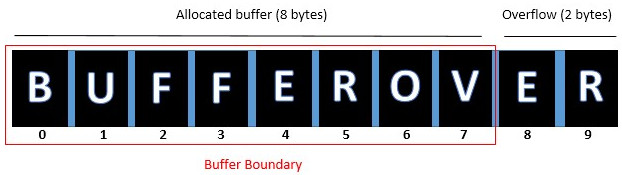

4. Exploitation of server_hogwarts
Buffer overflow
Buffers are memory allocations that are volatile, they temporarily hold the data while transferring data from one location to another. A buffer overflow occurs when the data being processed exceeds the storing capacity of the memory buffer. This results in the program overwriting oversized data in the adjacent memory locations which lead to overflow of the buffer. A buffer overflow occurs when we operate on buffers of char type.
We will try to understand this concept with few examples. For example, a buffer is designed in such a way that it would accept 8 bytes of data, in such a scenario if the data inputted by the user is more than 8 bytes then the data which is over 8 bytes would overwrite the adjacent memory surpassing the allocated buffer boundary. This would ultimately create segmentation faults followed by many other errors resulting in program execution is terminated.

As we can see in the above representation, the memory allocated was 8 bytes while the data inputted by the user was 10 bytes which surpassed the buffer boundary, and those extra 2 bytes of data (E & R) overwritten the adjacent memory locations.
From https://www.hackingarticles.in/a-beginners-guide-to-buffer-overflow/